程序和进程，前台进程和后台进程的概念
前台进程占用终端，而后台进程是不占用终端的
如果只是在最后加上&使得进程变为后台进程，这种后台进程依然会在终端关闭的时候进程终止
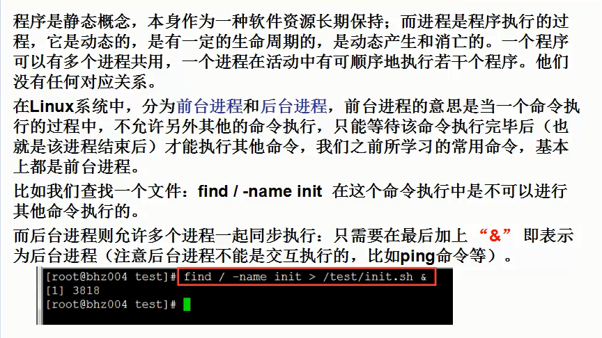
w(who)命令用于查看用户信息及用户开的进程
w命令与who命令的差别在于who命令只是显示当前有哪些用户登录了，而w命令除了显示有哪些用户在登录还可以显示用户开的进程
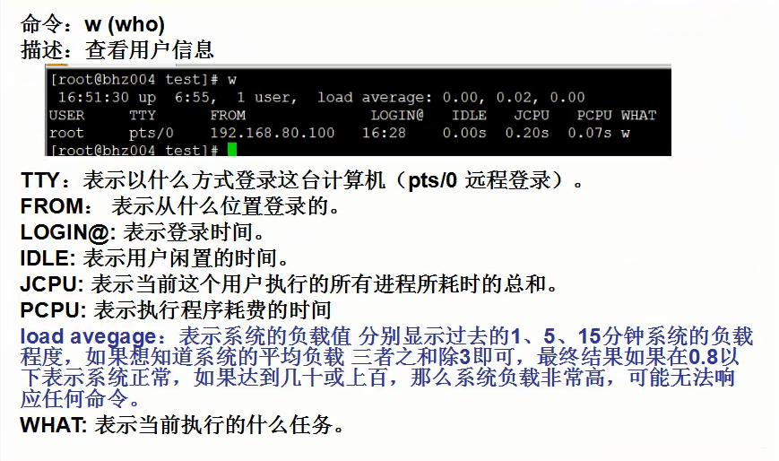
查看进程命令ps详细讲解
ps命令的基本用法
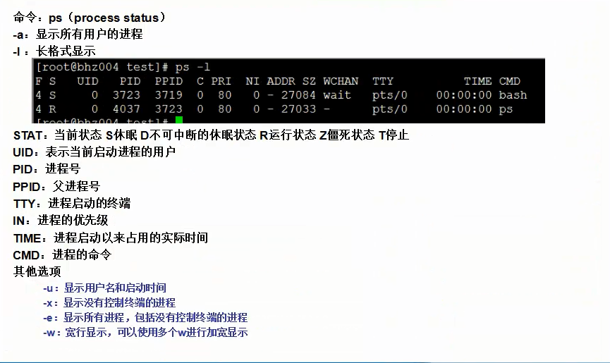
常用的ps命令加参数组合
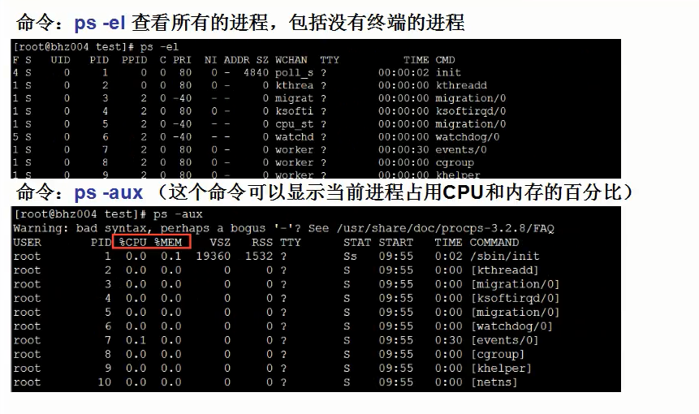
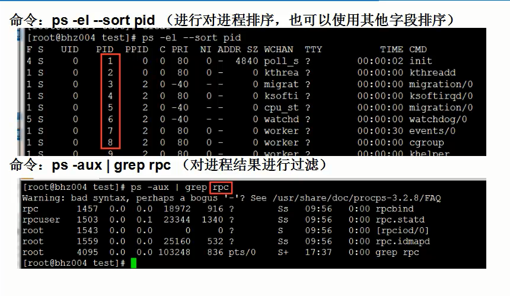
动态刷新查看进程
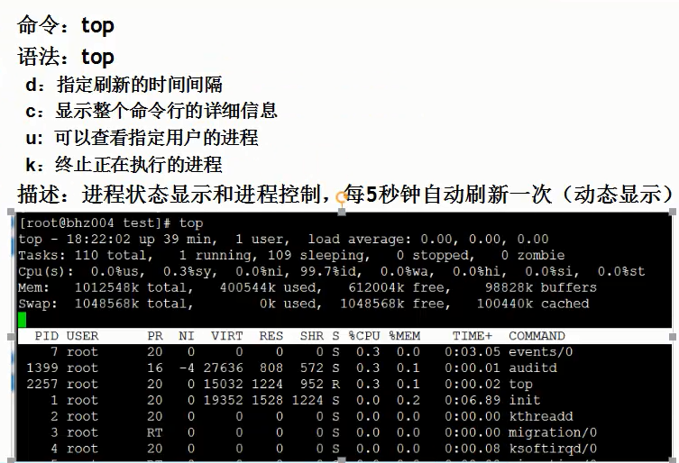
如何查看动态查看特定的进程呢？
一般我的做法是先用命令：ps -ef | grep 进程关键字，查出进程的PID后，再输入命令top -p 进程PID来动态查看特定进程
如何杀死进程
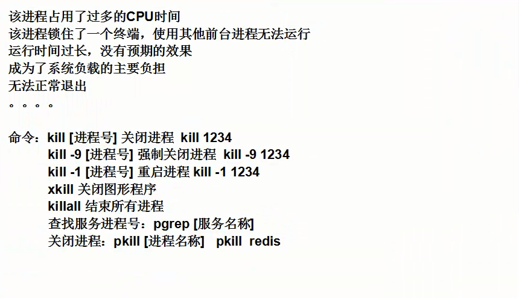
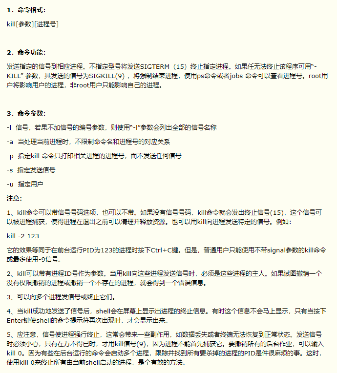
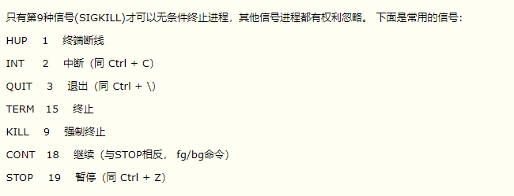
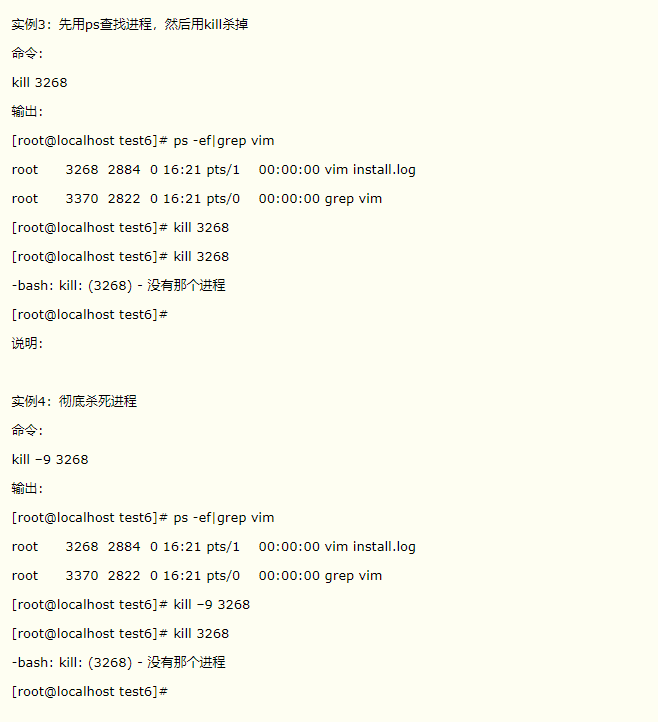
如何在用户退出终端的时候进程仍旧继续进行
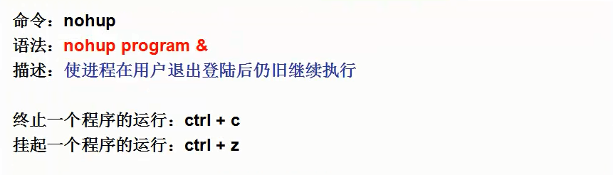
nohup和&的区别
&是在后台运行
nohup是以终端无关的运行，即退出远程终端（如xshell）之后还能够运行